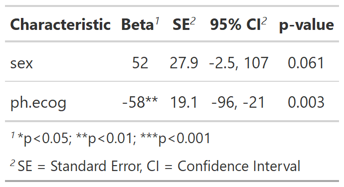

![[Experimental]](../help/figures/lifecycle-experimental.svg) Add significance stars to estimates with small p-values
Add significance stars to estimates with small p-values
| add_significance_stars {gtsummary} | R Documentation |
Add significance stars to estimates with small p-values
add_significance_stars( x, thresholds = c(0.001, 0.01, 0.05), hide_ci = TRUE, hide_p = TRUE, hide_se = FALSE )
x |
a |
thresholds |
thresholds for significance stars. Default is |
hide_ci |
logical whether to hide confidence interval. Default is |
hide_p |
logical whether to hide p-value. Default is |
hide_se |
logical whether to hide standard error. Default is |
Example 1

# Example 1 ---------------------------------- add_significance_stars_ex1 <- lm(time ~ sex + ph.ecog, survival::lung) %>% tbl_regression() %>% add_significance_stars(hide_ci = FALSE, hide_p = FALSE)